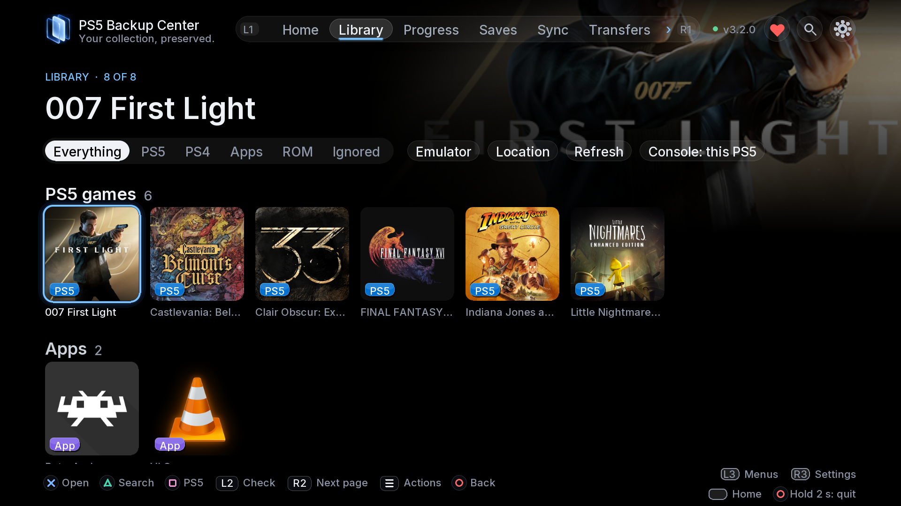
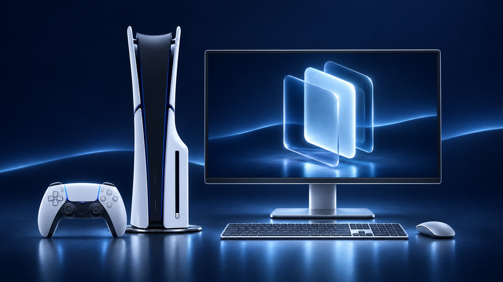
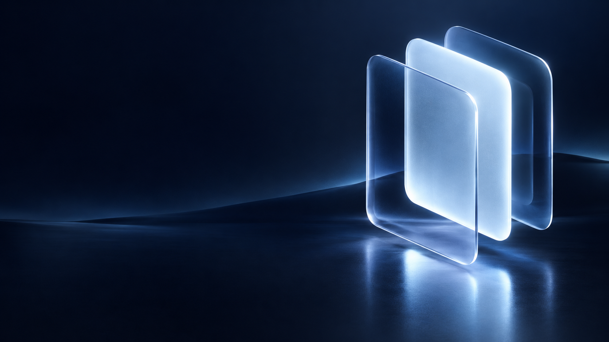

2.86.0
PS5 Backup Center
Individua cosa richiede un backup, confronta le copie esistenti e organizza gli scambi tra dispositivi. PS5 Backup Center riunisce inventario, backup, sincronizzazione e trasferimenti sulla TV e nel browser.
Guide →L’approvazione di produzione Dropbox è in attesa. La sincronizzazione automatica tra PS5 e l’installazione su un’altra console sono funzioni iniziali con test ancora da completare.

Ricevi giochi da una PS5 abbinata sulla rete locale. Esegui il backup, confronta, sincronizza e ripristina i salvataggi tra PS5, unità USB, NAS e cloud, dalla TV o dal browser. Gestisci app e DLC PS5 e i salvataggi di Switch ed emulatori compatibili.
Collega Google Drive e OneDrive personale dal telefono. L’accesso a Dropbox è limitato durante lo sviluppo.
Novità 3.2.0 →Guide →GitHub →Media →La Home propone azioni: giochi senza copia nota, copie più recenti, duplicati, contenuti da confrontare o verificare, sincronizzazione e attività in corso. Le schede dipendono da inventario e dispositivi.
Guide →
Controlla fonti rilevate e configurazione di ogni emulatore. Verifica cartelle ROM, file di configurazione e partite; il ritorno automatico ripristina il rilevamento. Nella scheda ROM scegli solo componenti disponibili. ROM, stato e partita sono diversi. Per Switch/Eden controlla il profilo destinatario.
Guide →

Il ripristino trasforma una copia archiviata nella partita attiva dell’account scelto. Non installa il gioco e non ripristina l’intera console.
Guide →La data non basta a riconoscere i progressi maggiori. Le lettere distinguono contenuti, non sono una graduatoria.
Guide →Un piano ripete le scelte di un backup. Non è la futura sincronizzazione automatica alla chiusura del gioco.
Guide →
Le copie archiviate e le partite attive sono distinte. I giochi completi usano i trasferimenti. Un piano preparato rapidamente non significa sincronizzazione automatica continua.
Guide →Copiare mantiene l’origine; spostare la rimuove dopo aver verificato la destinazione. Comprimere non protegge da solo la partita attiva.
Guide →Aggiungi NAS o console nei dispositivi e controlla l’identità prima di salvare. Per il NAS scegli il protocollo supportato, prova la connessione e seleziona la cartella. Fra PS5 conferma il codice di associazione; per Switch prepara ftpd e un’esportazione JKSV. FTP/FTPS sono disponibili; SMB è in sviluppo.
Guide →
Scegli tra 19 lingue e otto temi. Suoni, musica di sottofondo e volume sono separati. Controlla fonti, elementi ignorati, utenti e dispositivi prima di cambiare associazioni. Le novità permettono di rileggere i cambiamenti. I riconoscimenti includono autori, licenze e fonti dei componenti.
Guide →TV e browser sono client dello stesso motore. Chiudere un’interfaccia non arresta da solo il motore; spegnere la console è diverso.
Guide →Scegli tra 19 lingue e otto temi. Suoni, musica di sottofondo e volume sono separati. Controlla fonti, elementi ignorati, utenti e dispositivi prima di cambiare associazioni. Le novità permettono di rileggere i cambiamenti. I riconoscimenti includono autori, licenze e fonti dei componenti.


Individua cosa richiede un backup, confronta le copie esistenti e organizza gli scambi tra dispositivi. PS5 Backup Center riunisce inventario, backup, sincronizzazione e trasferimenti sulla TV e nel browser.
Guide →PS5 Center è un progetto futuro più ampio, con ambito e roadmap da definire insieme; non si limita alla gestione di giochi e app e non è ancora sviluppato.
PS5 Center →PS5 Connector esplora come estendere le capacità delle console con connettori e soluzioni esistenti. NAS, condivisioni e USB sono esempi, non un ambito fisso. Nessun prototipo o data annunciati.
PS5 Connector →